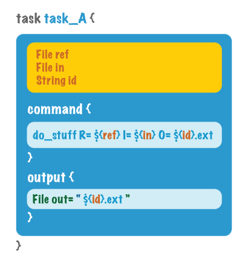
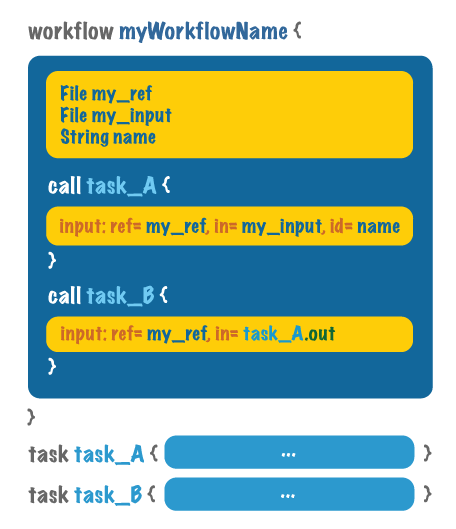

添加变量¶
在这个上下文中，变量是我们写入脚本中的占位符，而不是实际的文件名和参数值。然后，我们可以指定在runtime(即运行脚本时)要使用的文件名和值，而无需修改脚本，这非常方便。请注意，我们不必在所有情况下都使用变量——对于某些参数，如果它们在每次运行时都不会改变，那么硬编码这些值是有意义的。
因此，让我们看看如何在WDL脚本中包含变量(稍后我们将讨论如何在运行时指定变量值)。我们可能希望在两个不同的级别中包含变量:在单个任务中，或者在整个工作流中，这样变量就可以用于它调用的任何任务。我们将从任务级变量开始，因为它是最简单的情况，然后在此基础上处理工作流级变量，它有一些(非常合理且完全不难)复杂性。在这个解释的过程中，我们将接触到变量值如何从一个任务继承到下一个任务，这是下一个主题的一种预览，关于将任务连接在一起。
添加任务级别的变量¶
回到前面的示例中的task_A，让我们看看它的命令和输出组件块中实际包含的内容。我们虚构了一个名为do_stuff的程序，它可能会做一些比打印“Hello World”更有趣的事情。这个程序需要分别使用参数R=和I=提供两个文件，并生成一个必须使用参数O=命名的输出文件。如果我们要硬编码这些值，我们可以只编写命令行，就像我们在终端中运行它一样,e.g. do_stuff R=reference.fa I=input.bam O=variants.vcf.
为了用变量替换这些硬编码的值，我们首先必须声明变量，这是一种奇特的方式，表示我们在任务块的顶部写它们的名称和它们代表的值的类型，例如File: ref。然后，我们可以在命令中适当的位置，在花括号中插入变量名，并以美元符号作为前缀，如: R=${ref}.
在这里，对于O=的值，我们使用变量来指定一个基名。该脚本将自动地将这个基名称与我们硬编码的.ext文件扩展名连接起来，从${id}.ext生成完整的输出文件名。
最后，我们标识希望作为程序输出跟踪的命令的任何参数(在本例中是O=参数)，并通过将其分配的内容复制到输出块来声明它们，如示例所示。注意，这里我们也显式地指定了变量类型。
添加工作流级别变量¶
移出一层，到工作流的主体，您会看到我们现在已经在顶部声明了一组变量。这些声明基本上遵循与任务内部声明相同的规则。我们现在需要做的就是连接这两个级别，这样传递给工作流的参数就可以用作任务的输入。
为此，我们只需向call函数添加一个代码块。此块仅包含一个 input: 行，它枚举哪些工作流级变量连接到哪些任务级变量。
我们对这个工作流中调用的第二个任务task_B执行非常类似的操作，但有一个关键区别。首先，公共部分:task_B也接受引用文件作为输入，因此我们可以简单地提供相同的工作流级变量my_ref。到task_B中相应的变量. 但是，对于它的其他输入，我们需要给task_B task_A的输出。我们可以简单地使用task_name.output_variable语法引用它，这很方便. ——在这里是task_a.out。
最后，我们仍然需要知道如何将值传递给工作流来填充所有这些变量，不是吗?是的。是的,我们做的。
当然，您可以在声明变量时硬编码这些值，对于某些您知道总是相同的参数，这样做是有意义的。但是肯定有一些变量你需要保留，嗯，变量，所以你不必编辑你的脚本从运行到运行。
如何在实践中实现这一点主要取决于执行引擎，而不是WDL。流水线系统通常使用两种主要策略中的一种来满足这一需求:要么作为启动工作流执行的命令行的一部分提供值，要么提供一种列出所有所需值的配置文件。在Cromwell执行引擎中，我们更喜欢使用输入定义文件，这将在后面的小节中详细介绍。
这还不算太糟。在下一节中，我们将讨论如何通过任务的输入和输出，以及一些额外的函数来连接任务，从而在不增加不必要的代码复杂性的情况下生成功能完整的任务。